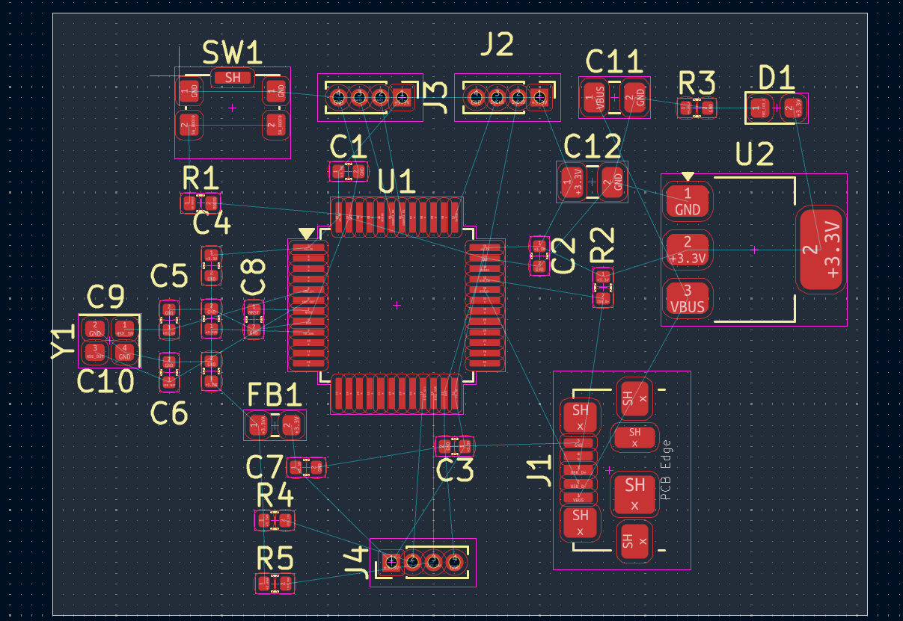

Custom STM32 microcontroller board designed entirely in KiCad, built around the
popular STM32F103C8T6 (ARM Cortex-M3) in an LQFP-48 package. The project includes the full
schematic, PCB layout and 3D render, and covers power-integrity analysis — decoupling strategies and
ferrite-bead filtering for clean digital and analog domains.
Block Diagram
USB Micro-B (J1) → 5 V VBUS rail with EMC filtering
U2 — AMS1117-3.3 → 3.3 V regulator for the MCU power domain
U1 — STM32F103C8T6 → the MCU, with 100 nF decoupling per VDD pair
FB1 — 120 Ω — ferrite bead splitting the 3.3 V / 3.3VA analog supply
C1–C8 — 100 nF / 1 µF / 10 nF — decoupling capacitors close to VDD pins
C11, C12 — 22 µF — bulk capacitance on the power rails
R1 — 10 kΩ — BOOT0 pull-down / reset wiring
R2–R5 — 1.5 kΩ — LED current limiting and signal conditioning
D1 — RED LED — power / GPIO status indication
J1 — USB Micro-B, J2–J4 — 1×4 headers — USB + I/O breakout
PCB Layout

Power-Integrity Notes
This board applies the classic power-delivery toolbox for mixed-signal MCU designs:
Decoupling capacitors placed as close as possible to each VDD pin act as a local energy
reservoir — supplying instantaneous current during switching transients, shunting high-frequency noise to ground,
and containing per-IC switching noise.
Ferrite bead (FB1) sits in series on the 3.3VA rail to block high-frequency EMI / RFI and
isolate the noise-sensitive analog supply from the noisy digital domain — dissipating the energy as heat.
Bulk 22 µF capacitors smooth lower-frequency, higher-energy fluctuations across each power block.
Status: schematic, PCB layout and 3D render complete — ready for fabrication review.